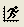

平面化された積み上げ曲面グラフをZ軸上に配置する
平面積み上げ- Zオフセット
概要
このチュートリアルではZオフセットを平面化した複数のオブジェクトを積み上げる方法をご紹介しています。

学習する項目
- 複数の画像を行列オブジェクトとしてOriginにインポートする方法。
- 画像オブジェクトをグラフレイヤー上に3D積み上げ曲面としてプロットする方法。
- 平面化された画像をZ軸に配置する方法。
ステップ
- 新しい行列ウィンドウを作成し、データ：ファイルからインポート：イメージファイルを行列へインポートで、\Sample\Image Processing and Analysisフォルダにあるmyocyte1~myocyte8をインポートします。イメージファイルを行列へインポートダイアログで、複数ファイル(第一以外)のインポートモードを新しいオブジェクトの開始に設定します。
- 「OK」ボタンをクリックして、ファイルを行列オブジェクトとして行列にインポートします。

- 最初のオブジェクト(myocyte1.tif)を右クリックして「プロパティ」を選択し、 「行列プロパティ」ダイアログを開きます。コメントボックスに5と入力して進む>>をクリックします。同様にそれぞれの行列オブジェクトに14,29,41,57,72,85,97と入力します。「OK」ボタンをクリックして、ダイアログを閉じます。
- メインメニューから作図> 3D：3D積み上げ曲面を選択して グラフを作成します。
- プロットをダブルクリックして作図の詳細ダイアログを開き、カラーマップ/等高線タブに移動し 、色塗りヘッダーをクリックし て塗り方 ダイアログを開き、 グレースケール パレットを選択します 。
- OKボタンをクリックして、ダイアログを閉じます。ボタンをクリックしてスピードモードを無効にします。下図のようなグラフが完成します。